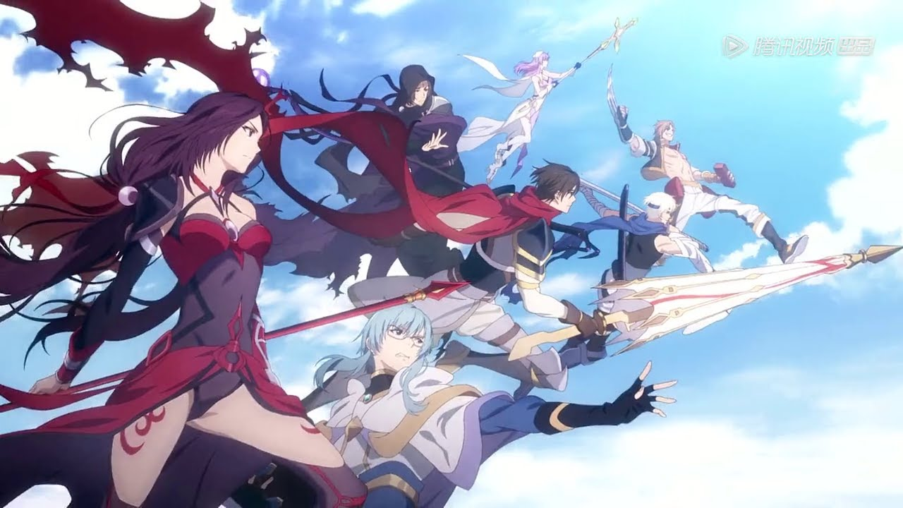
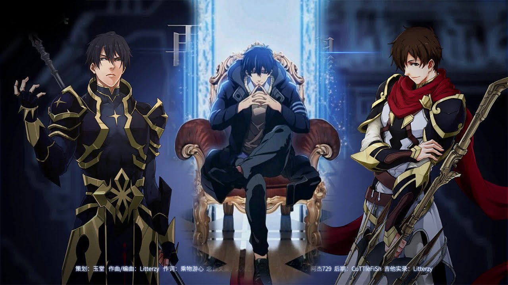
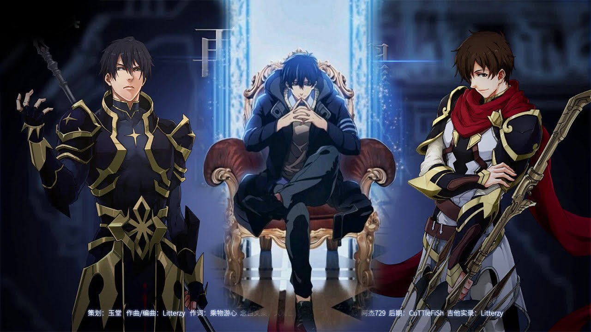

Quan Zhi Gao Shou
Adventurer, Explorer, Storyteller
Gallery

 

QUI EST Ye Xiu ?
de Ye Xiu, un joueur d'e-sport professionnel vivant à Hangzhou , en Chine . Largement considéré comme le meilleur joueur du jeu vidéo Glory , Ye Xiu était capitaine de l'équipe d'e-sport,